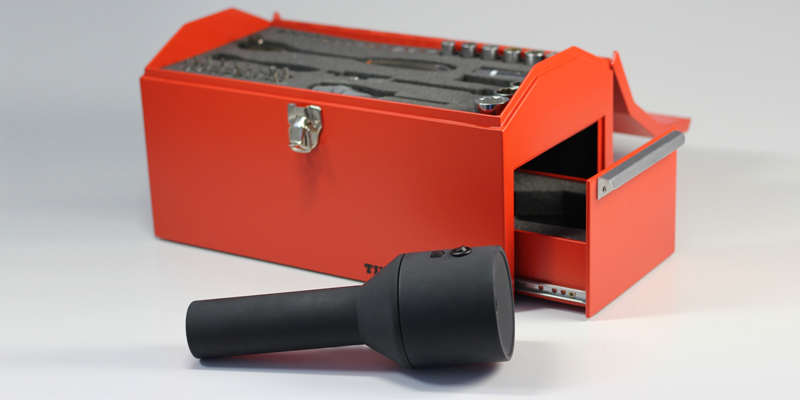

Timeline Tools considers the possibility of tracking the actions of tools, giving each tool in a toolbox the ability to log it's removal and return, and compiling them into a tweetable timeline.
Tracking of the process begins with the removal of the torch, which must then be placed facing the workspace. This can be done by resting the torch in an appropriate place, or by breaking it apart, allowing it to be stuck magnetically to a nearby object. Each time a tool is removed from the toolbox and used, the camera within the torch captures an image. These images are time-stamped and compiled until the task is complete and the torch is replaced. The compiled images form a project/task timeline which is then uploaded to the users twitter account allowing the task to be shared accurately.